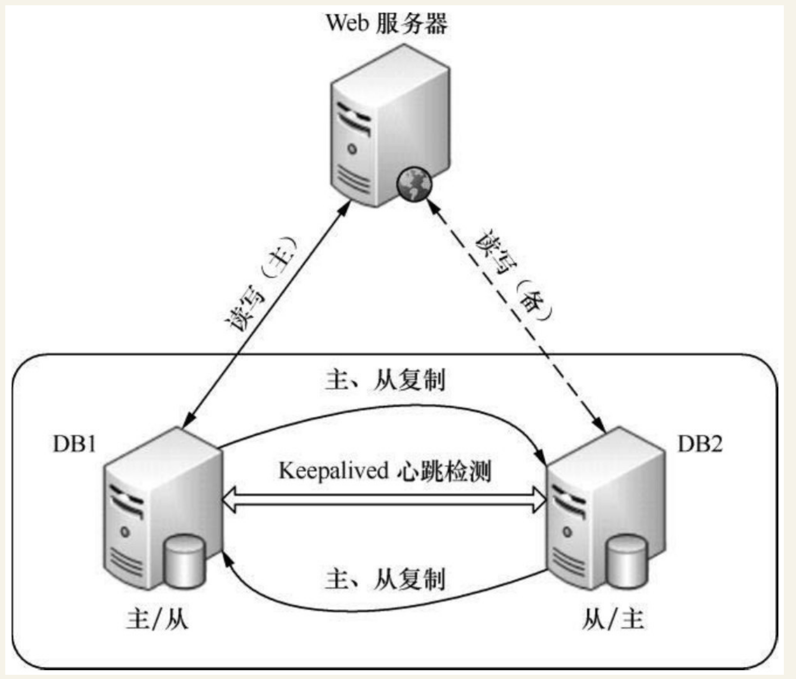

Contents
10.7. Keepalived实现MySQL双主高可用¶
架构图： 
10.7.1. MySQL主主互备模式配置环境¶
主机名 |
操作系统版本 |
MySQL版本 |
主机IP |
MySQL VIP |
|---|---|---|---|---|
DB1(主) |
Centos6.3 |
mysql5.1.73 |
192.168.88.11 |
192.168.88.10 |
DB1(备) |
Centos6.3 |
mysql5.1.73 |
192.168.88.12 |
192.168.88.10 |
10.7.2. MySQL主主互备模式配置¶
1.修改MySQL配置文件¶
DB1 主机的配置文件
在/etc/my.cnf文件中的“[mysqld]”段添加如下内容。
# 添加 主1 = 1 主2 = 2
server-id = 1
# 添加 开启二进制文件
log-bin=mysql-bin
relay-log = mysql-relay-bin
# 添加 避免主键冲突
auto-increment-offset= 1
auto-increment-increment= 2
##过滤掉不需要复制的数据库或表
replicate-wild-ignore-table=mysql.%
replicate-wild-ignore-table=test.%
replicate-wild-ignore-table=information_schema.%
DB2主机的配置文件
在/etc/my.cnf文件中的“[mysqld]”段添加如下内容。
# 添加 主1 = 1 主2 = 2
server-id = 2
# 添加 开启二进制文件
log-bin=mysql-bin
relay-log = mysql-relay-bin
# 添加 避免主键冲突
auto-increment-offset= 1
auto-increment-increment= 2
##过滤掉不需要复制的数据库或表
replicate-wild-ignore-table=mysql.%
replicate-wild-ignore-table=test.%
replicate-wild-ignore-table=information_schema.%
replicate-wild-ignore-table 是个复制过滤选项，可以过滤掉不需要复制的数据库或表。
例如“mysql.%”表示不复制MySQL库下的所有对象，其他依次类推。
与此对应的是replicate_wild_do_table选项，用来指定需要复制的数据库或表。
这里需要注意的是，不要在主库上使用binlog-do-db或binlog-ignore-db选项，也不要在从库上使用replicate-do-db或replicate-ignore-db选项，因为这样可能产生跨库更新失败的问题。推荐在从库上使用replicate_wild_do_table和replicate-wild-ignore-table两个选项来解决复制过滤问题。
2.手动同步数据库¶
mysql>FLUSH TABLES WITH READ LOCK;
Query OK, 0 rows affected (0.00 sec)
不要退出这个终端，否则这个锁就失效了。在不退出终端的情况下，再开启一个终端直接打包压缩数据文件或使用mysqldump工具来导出数据。这里通过打包mysql文件来完成数据的备份，操作过程如下：
[root@DB1 ～]# cd /var/lib/
[root@DB1 lib]# tar zcvf mysql.tar.gz mysql
[root@DB1 lib]# scp mysql.tar.gz DB2:/var/lib/
将数据传输到DB2后，依次重启DB1和DB2上面的mysql。
3.创建复制用户并授权，并查看二进制文件¶
首先在DB1的mysql库中创建复制用户，
创建用户
# 1.创建用户名可被任意主机连接
mysql -uroot -p123456 -e "grant all on *.* to "root"@"%" identified by "123456";"
# 2.添加复制连接用户
GRANT REPLICATION SLAVE ON *.* TO 'RepUser'@'%'identified by 'beijing';
# 3.刷新
flush privileges;
查看二进制文件
# 进入主1数据库
mysql -uroot -p123456
MariaDB [(none)]> show master status;
+------------------+----------+--------------+------------------+
| File | Position | Binlog_Do_DB | Binlog_Ignore_DB |
+------------------+----------+--------------+------------------+
| mysql-bin.000004 | 245 | | |
+------------------+----------+--------------+------------------+
1 row in set (0.00 sec)
# 进入主2数据库
mysql -uroot -p123456
MariaDB [(none)]> show master status;
+------------------+----------+--------------+------------------+
| File | Position | Binlog_Do_DB | Binlog_Ignore_DB |
+------------------+----------+--------------+------------------+
| mysql-bin.000005 | 335 | | |
+------------------+----------+--------------+------------------+
1 row in set (0.00 sec)
4. 通过关联用户 关联两端position号 与 二进制文件 实现主主复制¶
# 主1
MariaDB [(none)]> CHANGE MASTER TO MASTER_USER='RepUser',MASTER_HOST='192.168.1.109',MASTER_PASSWORD='beijing',MASTER_PORT=3307,MASTER_LOG_FILE='mysql-bin.000005',MASTER_LOG_POS=335;
# 主2
MariaDB [(none)]> CHANGE MASTER TO MASTER_USER='RepUser',MASTER_HOST='192.168.1.108',MASTER_PASSWORD='beijing',MASTER_PORT=3307,MASTER_LOG_FILE='mysql-bin.000004',MASTER_LOG_POS=245;
5.两端开启复制功能¶
MariaDB [(none)]> start slave;
6.查看主主复制状态，双yes 为成功！！！¶
主1
MariaDB [(none)]> show slave status\G
*************************** 1. row ***************************
Slave_IO_State: Waiting for master to send event
Master_Host: 192.168.1.109
Master_User: RepUser
Master_Port: 3307
Connect_Retry: 60
Master_Log_File: mysql-bin.000005
Read_Master_Log_Pos: 335
Relay_Log_File: mariadb-relay-bin.000015
Relay_Log_Pos: 619
Relay_Master_Log_File: mysql-bin.000005
Slave_IO_Running: Yes
Slave_SQL_Running: Yes
主2
MariaDB [(none)]> show slave status\G
*************************** 1. row ***************************
Slave_IO_State: Waiting for master to send event
Master_Host: 192.168.1.108
Master_User: RepUser
Master_Port: 3307
Connect_Retry: 60
Master_Log_File: mysql-bin.000004
Read_Master_Log_Pos: 245
Relay_Log_File: mariadb-relay-bin.000015
Relay_Log_Pos: 529
Relay_Master_Log_File: mysql-bin.000004
Slave_IO_Running: Yes
Slave_SQL_Running: Yes
10.7.3. DB1和DB2上安装Keepalived¶
安装和配置，安装过程如下:
[root@keepalived-master app]#tar zxvf keepalived-1.2.12.tar.gz
[root@keepalived-master app]#cd keepalived-1.2.12
[root@keepalived-master keepalived-1.2.12]#./configure --sysconf=/etc \
> --with-kernel-dir=/usr/src/kernels/2.6.32-431.5.1.el6.x86_64
[root@keepalived-master keepalived-1.2.12]#make
[root@keepalived-master keepalived-1.2.12]#make install
[root@keepalived-master keepalived-1.2.12]#ln -s /usr/local/sbin/keepalived /sbin/
[root@keepalived-master keepalived-1.2.12]#chkconfig --add keepalived
[root@keepalived-master keepalived-1.2.12]#chkconfig --level 35 keepalived on
10.7.4. DB1¶
DB1服务器上/etc/keepalived/keepalived.conf
global_defs {
notification_email {
acassen@firewall.loc
failover@firewall.loc
sysadmin@firewall.loc
}
notification_email_from Alexandre.Cassen@firewall.loc
smtp_server 192.168.200.1
smtp_connect_timeout 30
router_id MySQLHA_DEVEL
}
vrrp_script check_mysqld {
script "/etc/keepalived/mysqlcheck/check_slave.pl 127.0.0.1" #检测mysql复制状态的脚本
interval 2
weight 21
}
vrrp_instance HA_1 {
state BACKUP #在DB1和DB2上均配置为BACKUP
interface eth0
virtual_router_id 80
priority 100
advert_int 2
nopreempt #不抢占模式，只在优先级高的机器上设置即可，优先级低的机器上不设置
authentication {
auth_type PASS
auth_pass qweasdzxc
}
track_script {
check_mysqld
}
virtual_ipaddress {
192.168.88.10/24 dev eth0 #mysql的对外服务IP，即VIP
}
}
/etc/keepalived/mysqlcheck/check_slave.pl文件的内容如下
#!/usr/bin/perl -w
use DBI;
use DBD::mysql;
# CONFIG VARIABLES
$SBM = 120;
$db = "ixdba";
$host = $ARGV[0];
$port = 3306;
$user = "root";
$pw = "xxxxxx";
# SQL query
$query = "show slave status";
$dbh = DBI->connect("DBI:mysql:$db:$host:$port", $user, $pw, { RaiseError => 0,
PrintError => 0 });
if (!defined($dbh)) {
exit 1;
}
$sqlQuery = $dbh->prepare($query);
$sqlQuery->execute;
$Slave_IO_Running = "";
$Slave_SQL_Running = "";
$Seconds_Behind_Master = "";
while (my $ref = $sqlQuery->fetchrow_hashref()) {
$Slave_IO_Running = $ref->{'Slave_IO_Running'};
$Slave_SQL_Running = $ref->{'Slave_SQL_Running'};
$Seconds_Behind_Master = $ref->{'Seconds_Behind_Master'};
}
$sqlQuery->finish;
$dbh->disconnect();
if ( $Slave_IO_Running eq "No" || $Slave_SQL_Running eq "No" ) {
exit 1;
} else {
if ( $Seconds_Behind_Master > $SBM ) {
exit 1;
} else {
exit 0;
}
}
这是个用Perl写的检测mysql复制状态的脚本。ixdba是本例中的一个数据库名。读者只需修改文件中数据库名、数据库的端口、用户名和密码即可直接使用，但在使用前要保证对于此脚本有可执行权限
10.7.5. DB2¶
接着将keepalived.conf文件和check_slave.pl文件复制到DB2服务器上对应的位置，
然后将DB2上keepalived.conf文件中priority值修改为90，同时去掉nopreempt选项。
在完成所有配置后，分别在DB1和DB2上启动Keepalived服务，在正常情况下VIP地址应该运行在DB1服务器上。
10.7.6. 测试MySQL主从同步功能¶
1.在远程客户端通过VIP登录测试
2.数据复制功能测试
着上面的SQL操作过程，通过远程的mysql客户端连接VIP，进行读、写操作测试，登录DB2主机的mysql命令行，查询过程,看数据是否能够迅速同步了DB1的mysql写的数据。